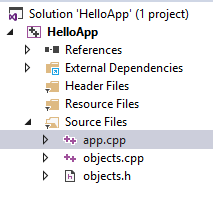

Внешние объекты
Кроме функций внешние файлы могут содержать различные объекты - переменные и константы. Для подключения внешних объектов в файл кода применяется ключевое слово extern.
Для объявления объектов определим файл objects.h со следующим содержимым:
extern const int x;
extern double y;
Здесь объявляются константа x и переменная y. Так как эти объекты будут внешними по отношению к исходному коду, который будет их использовать, то они определяются с ключевым словом extern.
Для определения этих объектов добавим новый файл objects.cpp:
#include "objects.h"
const int x = 5;
double y = 3.4;
Используем эти объекты в файле app.cpp:
#include <iostream>
#include "objects.h"
int main()
{
std::cout << "x = " << x << std::endl;
std::cout << "y = " << y << std::endl;
return 0;
}

При компиляции в Visual Studio все файлы автоматически компилируются в один. При компиляции через g++ необходимо передать все файлы через пробел компилятору:
g++ app.cpp objects.cpp -o appНа выходе будет сгенерирован единый файл app.
 Лабораторная №1
Лабораторная №1